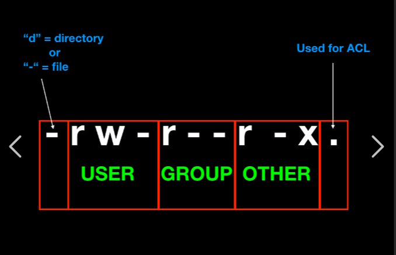
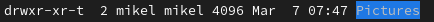
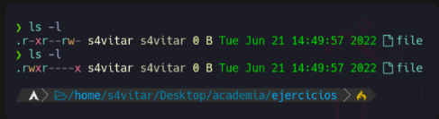
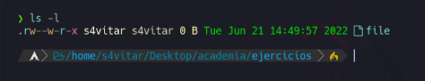

Fitxategi eta direktorioen baimenak hurrengo aginduarekin ikusi ditzakegu.
ls -al
Jabea (user): Fitxategi bat sortzen dugunean, sortzailea jabea izango da defektuz. Taldea (group): Fitxategi baten jabetza talde bati ere bai dagokio Besteak (other): Jabeak edo taldekideak ez direnak

Linuxen baimen motak eta chmod aginduaren erabilera azalduko ditut:
Baimen Motak:
Baimen mota hauek erabilzaile bakoitzari aplikatu daitezke, eta baimenak fitxategiaren jabetza, taldearen jabetza eta beste erabiltzaile batzuen baimenak izan daitezke.
chmod Agindua:
chmod komandoa erabiliz, fitxategien baimenak aldatu ditzakegu. Oinarri hauek dira:
Oinarriak:
u: Fitxategiaren jabea (owner).g: Fitxategiaren taldea (group).o: Beste erabiltzaile batzuk (others).Operazioak:
+: Baimena gehitu.-: Baimena kendu.=: Baimenak zehaztu.Baimen Motak:
r: Irakurketa baimena.w: Idazketa baimena.x: Exekuzio baimena.Adibideak:
# Erabiltzaileari idazketa baimena gehitu fitxategian
chmod u+w fitxategia.txt
# Erabiltzailearen exekuzio baimena kentzea script-ari
chmod u-x script.sh
# Erabiltzaileei irakurketa eta exekuzio baimenak ezarri programa bati
chmod ug+rx programa
# Guztiei exekuzio baimena ezarri fitxategi bati
chmod a+x fitxategia
Honek baimen motak kontrolatzeko aukera ematen dizu, hau da, nork norki zein baimenak dituen eta zer ekintzak egin ditzakeen fitxategi edo karpeta batean.
Adibidea, jabeari (user): exekutatzeko baimen horrela eman ahal diogu
chmod u+w text.txt
Honela, taldeari eta bestei exekutatzeko eta idazteko baimenak emango diogu.
chmod go+wx text.txt
Bestei, irakurtzeko baimena horrelo kendu diezaiokegu
chmod o-r text.txt
Adibidez baimen guztiak kentzeko
chmod 000 froga.txt
Baimen guztiak gehitzeko
chmod 777.froga.txt
Etabiltzaileari baimen guztiak emateko eta besteei edo taldekidei irakurtze eta exekutazio baimenak emateko.
Sticky bit daukan fitxategia edo direktorio bat bakarrik jabea edo rootek aldatu ahal dio izena edo ezabatu ahal du.
Sticky bia jartzeko
chmod +t text.txt
Sticky bia kentzeko
chmod -t text.txt

Suid aktibatuta dagoenean fitxategi hau exekutatzen duen erabiltzaileak sortzailearen baimenak izango ditu
chmod u+s text.txt
Sortu exekutable bat hurrengo edukiarekin
#!/bin/bash
echo erabiltzailea
id
echo exekuzioa baimen erabiltzailea
echo $EUID
Baimenak esleituko dizkiogu fitxategiari
chmod 755 suidtext.sh
Ezarri SUID suidtext.sh fitxategiari
chmod u+s suidtext.sh
chmod 4755 suidtext.sh
Ezaugarri bereziak ikusteko lsattr agindua erabiliko dugu
Ezaugarri bereziak aldatzeko chatttr agindua erabiliko dugu
Adibidez i atributuaren fitxategi bat inmutable bilakatzen digu. Hau esan nahi du inork ezin duela ezabatu, ezta root-ek. Ezabatu nahi izaterakoan, i atributoa ken beharko genioke lehenago.
chattr +i text.txt
lsattr text.txt
u ezaugarriarekin fitxategi bat ezabatzen dugunean datuak gordeta gelditzen dira eta bere berreskurapena ahalbidetzen du.
chattr +u text.txt
e ezaugarriarekin fitxategi bat ezabatzen duenean, okupatzen zuen memoria zeroekin berridazten da.
chatttr +e text.txt
c ezaugarriarekin komprimituta gordeko da.
chattr +c text.txt
a ezaugarriarekin fitxategi bati bakarrik gehitu ahal zaizkio gauzak, hau da aldatu aurretik zegoen ezer
chattr +a text.txt
Lotu dagokion baimenerekin
462
123
711
333
161
765
567
101
162
rwx--x--x 711
--x-w-wx 123
--x-----x 101
-wx-wx-wx 333
r-xrw-rwx 567
rwxrw-r-x 765
--xrw--w- 162
r--rw--w- 462
--xrw---x 161
Zein da fitxategi honen baimenen baimena modu oktalean?

Bai, zeren eta rw erabiltzen dugu, irakurtzeko eta idazteko baimena da modu oktalean.
Jarri hurrengo baimenak modu oktalean
r--r-xrw- :464
--xr-xr-- :701
r-------- :400
--------x :001
rwsr-xr-x :475
rwxr-sr-x :751
r--rw---t :4601
Zer gertatuko da hurrengo agindua exekutatzerakoan?

'Whoami' komandoaren output-a file fitxategian gordeko da, fitxategiaren jabea izateagatik baimenek ez baitidate eragiten
'Whoami' komandoaren output-a ezin izango da file fitxategian gorde, jabea izan arren, fitxategian esleitutako baimena gailentzen delako
Aurreko komandoa exekutatuko da eta bere emaitza file izeneko fitxategian idatzi egingo da. File izeneko fitxategian erabiltzailearen izena idatziko da.
Nola lortuko zenuke "file" artxiboaren baimenak ikusten den moduan aldatzeko?

chmod 741 froga.txt
Zortzitarrean zer baimen esleitu beharko dut artxiboak adierazitako baimenak izan ditzan lortzeko?
 chmod 624 (karpetaren izena)
Honako baimen hauek konfiguratuta dituen fitxategi hau ezabatu ahal izango dut?
 Bai
Bai